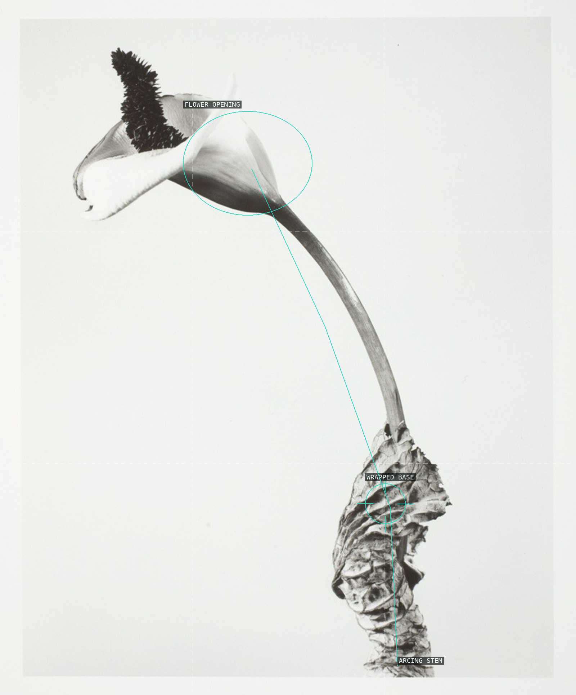
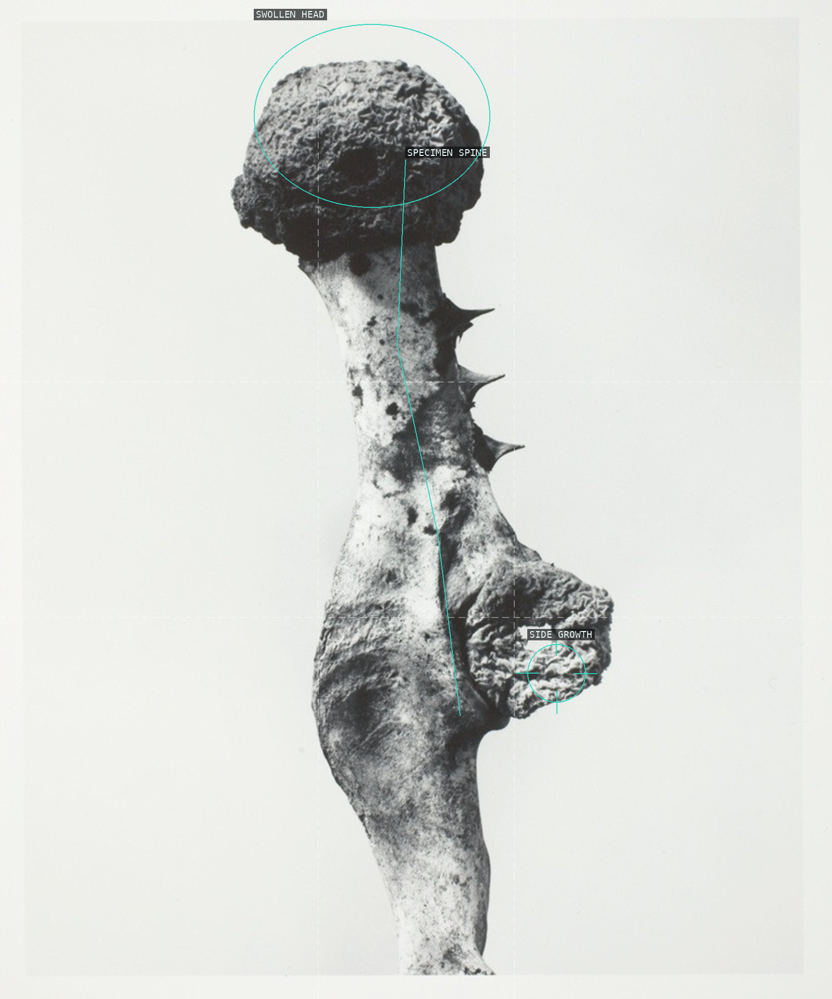
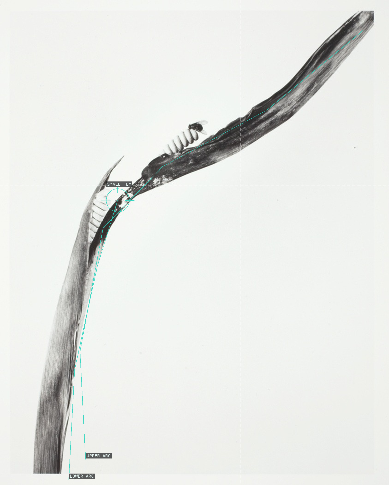
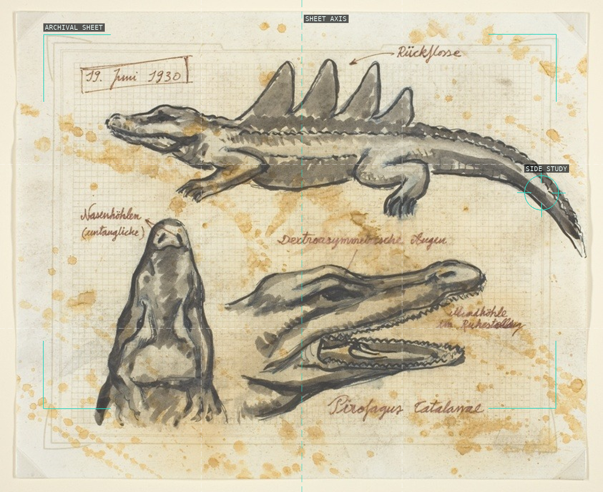
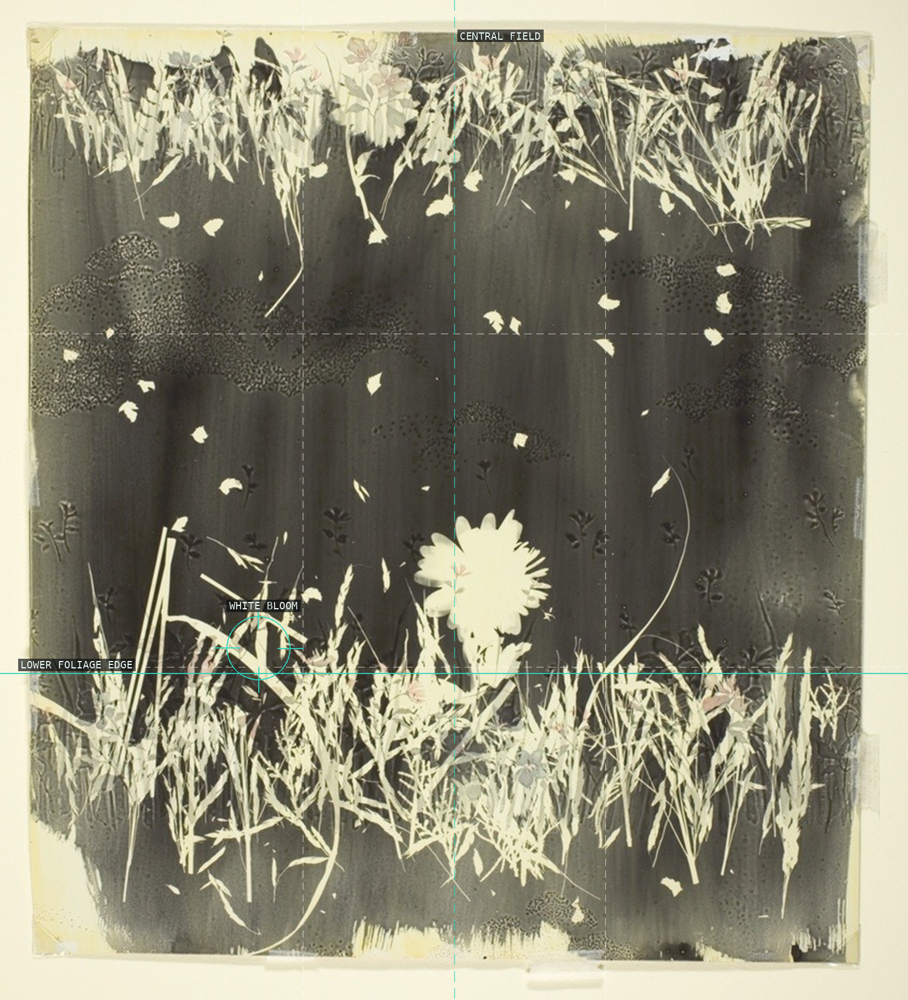
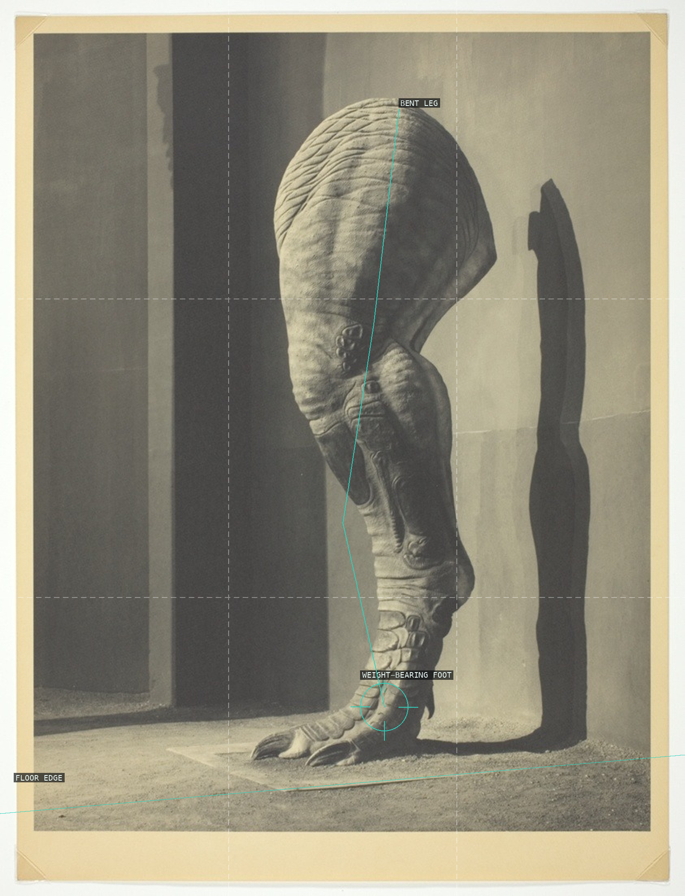
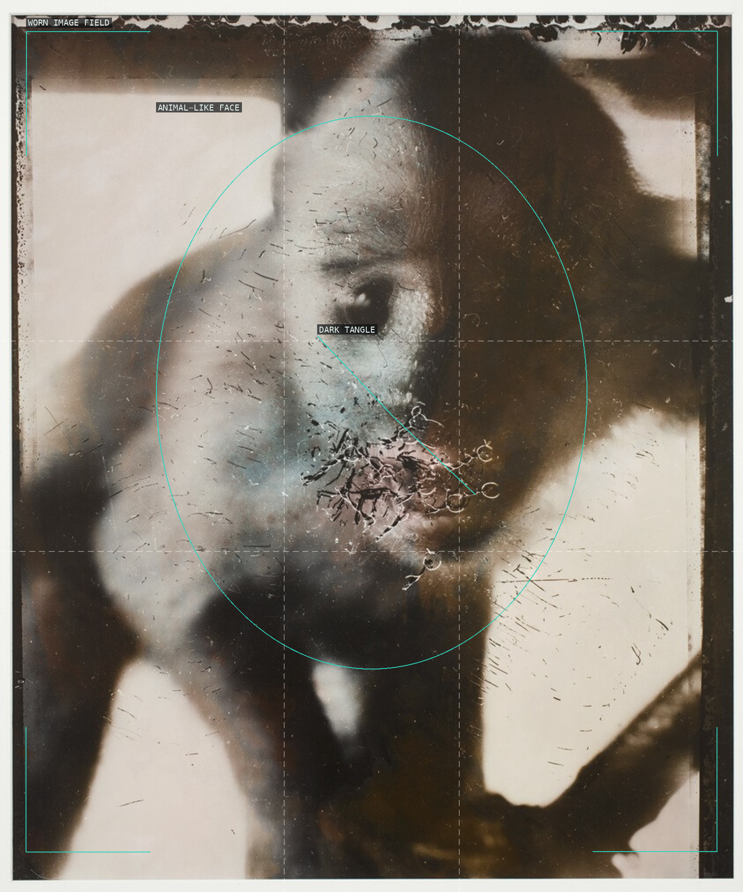
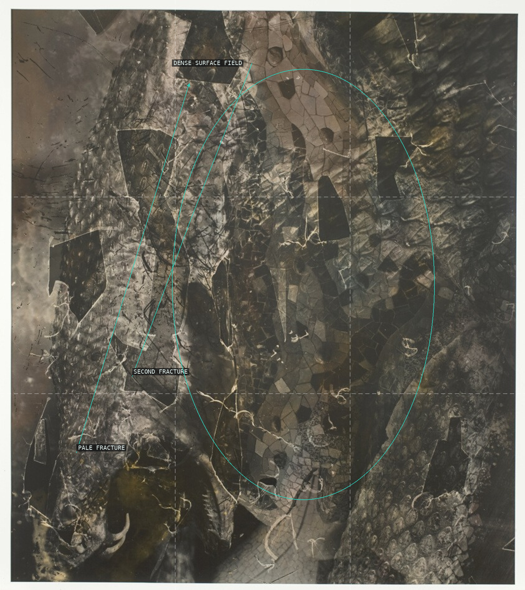
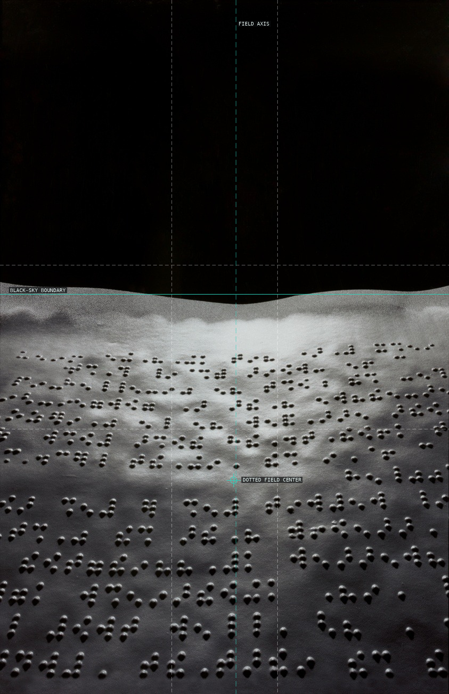
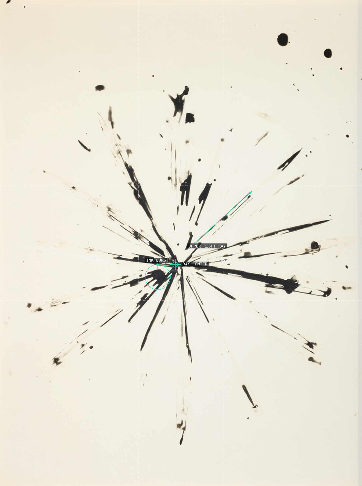

An arcing specimen stem turns the pale sheet into active space.

Head, spine, and side growth make an isolated silhouette precarious.

Two long arcs make a tiny fly the pressure point of the frame.

A worn archival sheet organizes separate studies into apparent evidence.

Vegetal bands hold a dark interval around one bright bloom.

Black wedges fracture a crowded painted body.

A bent leg and low floor edge stage a shadow double.

A face-like form remains unstable inside a worn image field.

Fractures and dense texture interrupt a stable figure-ground.

A low dotted field is compressed under black sky.

An off-center ink burst makes a diagram of outward force.